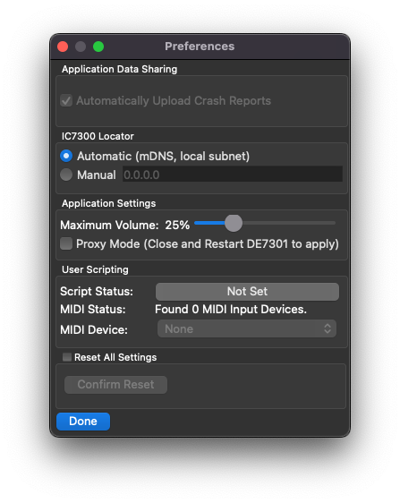

Note
In Limited Beta. Product launch targeted Q2 ‘23. Everything is subject to change.
Application Settings¶
Application settings control how the Mac/PC application behaves.
IC7300 Locator¶
By default, the application will query for the DE7301 hardware on your local area network using a technology called mDNS.
If mDNS does not work on your network, or the device is not found, the IPv4 address may be entered manually. You can find this information on your router’s webpage.
Maximum Volume¶
This control adjusts the maximum value that the virtual volume knob can go to. The radio can be quite loud, and prevents inadvertently turning the volume to maximum
User Scripting¶
This setting allows you to select the QML file used for the User Scripting engine
Additionally, if a MIDI device is present, it can be selected here for use in the Scripting API
Reset Settings¶
To reset ALL settings, click the checkbox to enable the button, then press the button
Note
This will clear your Radio Access File. Ensure you have a copy of it someplace.